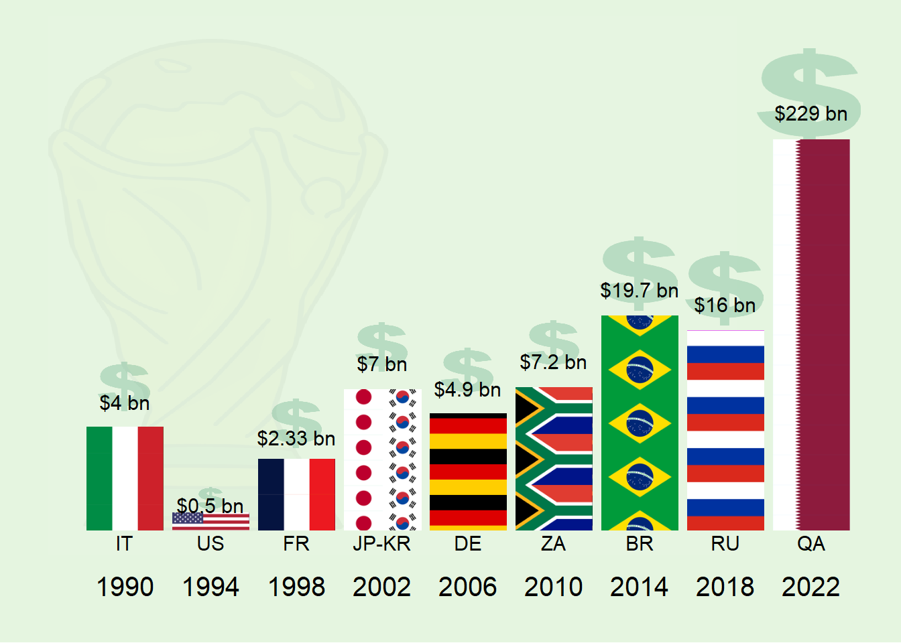

2 Cost of hosting world cup
Let’s start by loading the libraries that we’ll utilize in our analysis
#web scrapping
library(rvest)
#everything tidy?
library(tidyverse)
#handling spatial-data
library(rnaturalearth)
library(rnaturalearthdata)
library(sf)
library(ggflags)
library(ggspatial)
library(giscoR)
library(rasterpic)
library(countrycode)
#adding flags in ggplot
library(ggimage)
#Visually explore data tables
library(visdat)
#fit text within a defined area
library(ggfittext)
#set the default ggplot theme
theme_set(cowplot::theme_cowplot())
#get image
wc_img <- here::here("images/wc12.png")
#define function to control transparency and set to 0.2
transparent <- function(img) {
magick::image_fx(img, expression = "0.1*a", channel = "alpha")
}
# get flags form this repo
flagrepo <- "https://raw.githubusercontent.com/hjnilsson/country-flags/master/png250px/"#
# Extract the amount of money
url_2 <- "https://en.wikipedia.org/wiki/Economics_of_the_FIFA_World_Cup"
tbls_lst_2 <- url_2 %>%
read_html %>%
html_table()
#
df_4 <- tbls_lst_2[[2]] %>%
janitor::clean_names() %>%
mutate(host = str_replace(host, "/\\s", "-")) %>%
extract(host, c("country","year"), "([A-Z-]+) (\\([0-9]+\\))") %>%
separate_rows(country,sep = "-") %>%
mutate(year = parse_number(year),
#x = strex::str_first_currency(general_cost)[[4]],
x = parse_number(general_cost),
y = ifelse(str_detect(general_cost, "million"),x/1000,x))
df_4$iso2 <- countrycode(df_4$country, "ioc", "iso2c")ggplot()+
geom_col(data = df_4 %>% distinct(year, y),
aes(year, y),
fill = "grey90", color = "black", size = 1)+
geom_text(data = df_4 %>% distinct(year, y),
aes(year, y, label = y),
size = 5, nudge_y = 8)+
scale_y_continuous(breaks = c(1,10,100,200))+
labs(y = "Billion $")## Warning: Using `size` aesthetic for lines was deprecated in ggplot2 3.4.0.
## ℹ Please use `linewidth` instead.
ggplot()+
geom_col(data = df_4 %>% distinct(year, y),
aes(year, y))+
geom_text(data = df_4 %>% distinct(year, y) %>% mutate(y2 =y, y = glue::glue("${y} bn")),
aes(year, y2, label = y),
size = 4, nudge_y = 20)+
ggimage::geom_flag(data = df_4 %>%
filter(!country %in% c("JPN", "KOR")),
aes(year, y+8, image = iso2),
size = 0.07)+
ggimage::geom_flag(data = df_4 %>%
filter(country %in% c("JPN", "KOR")) %>%
mutate(year=ifelse(str_detect(country, "JPN"), year+1.5, year)),
aes(year-0.7, y+8, image = iso2),
size = 0.05)+
ggpattern::geom_col_pattern(data = df_4 %>% distinct(year, y),
aes(year, y),
pattern_filename = I("images/Gold-Dollar-Sign-PNG-HD.png"),
pattern = 'image',
pattern_type = 'tile',
pattern_scale = -1,
fill = "#a1d99b"
)+
ggimage::geom_image(data = data.frame(x = 1995, y = 120),
aes(x,y),
image = wc_img,image_fun = transparent,
size = 1.2)+
scale_x_continuous(breaks = unique(df_4$year))+
scale_y_continuous(breaks = c(1,10,100,200))+
labs(y = "", x = "")+
theme(plot.background = element_rect(fill = "#e5f5e0"),
panel.background = element_rect(fill = "#e5f5e0"),
panel.grid.major = element_line(colour = "#e5f5e0"),
axis.line = element_blank(),
axis.ticks = element_blank(),
axis.text.y = element_blank())
flags <- c()
# Loop and add
for (iso in df_4$iso2) {
# Download pic and plot
imgurl <- paste0(flagrepo, tolower(iso), ".png")
tmpfile <- tempfile(fileext = ".png")
download.file(imgurl, tmpfile, quiet = TRUE, mode = "wb")
flags <- c(flags, tmpfile)
}ggplot()+
ggimage::geom_image(data = expand_grid(x = c(seq(1990, 2022,length.out = 6)),
y = c(1, 10, 100)),
aes(x,y),
image = "images/Gold-Dollar-Sign-PNG-HD.png",image_fun = transparent,
size = 0.3)+
ggpattern::geom_col_pattern(data = df_4 ,
aes(year, y, fill = country),
position = position_dodge(),
pattern_gravity = I("West"),
pattern_filename = I(flags),
pattern = 'image',
pattern_type = 'tile',
pattern_scale = -1,
show.legend = FALSE)+
scale_y_continuous(breaks = c(1,10,100,200),
trans = scales::pseudo_log_trans(base = 10))+
scale_x_continuous(breaks = unique(df_4$year))+
geom_text(data = df_4 %>% distinct(year, y) %>% mutate(y2 = y+(y*0.45), y = glue::glue("${y} bn")),
aes(year, y2, label = y),
size = 4)+
geom_text(data = df_4%>%
arrange(country) %>%
group_by(year) %>%
summarise(iso2 = paste(iso2, collapse = "-")),
aes(year, label = iso2),
y = -0.07,
size = 4)+
labs(y = "", x = "")+
theme(plot.background = element_rect(fill = "#e5f5e0"),
panel.background = element_rect(fill = "#e5f5e0"),
panel.grid.major = element_line(colour = "#e5f5e0"),
axis.line = element_blank(),
axis.ticks = element_blank(),
axis.text.y = element_blank())